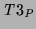

After [FittingFitting1985] (using the terminology of [Apt and BolApt and Bol1994]),
we define , an analogue of  which maps interpretations to
interpretations. For simplicity, we define it in terms of the model
theory (
which maps interpretations to
interpretations. For simplicity, we define it in terms of the model
theory ( could be defined in the same way -- the inadmissible
case would never arise).
could be defined in the same way -- the inadmissible
case would never arise).
generalises  : if there are no inadmissible atoms in
there are none in
: if there are no inadmissible atoms in
there are none in  . Various properties of are discussed
in [Apt and BolApt and Bol1994]. One important result is that a least fixpoint
with respect to the information ordering exists.
. Various properties of are discussed
in [Apt and BolApt and Bol1994]. One important result is that a least fixpoint
with respect to the information ordering exists.
Another immediate consequence operator,  , which retains the
truth value of inadmissible atoms, was introduced in [NaishNaish2000b]
(where it was called ). Essentially, inadmissible atoms
are assumed to succeed.
, which retains the
truth value of inadmissible atoms, was introduced in [NaishNaish2000b]
(where it was called ). Essentially, inadmissible atoms
are assumed to succeed.
Like ,  generalises
generalises  . If
. If  is empty,
is empty,  is equivalent to
is equivalent to  and thus each fixpoint of
and thus each fixpoint of  corresponds
to a fixpoint of
corresponds
to a fixpoint of  . Fixpoints of are also fixpoints
of
. Fixpoints of are also fixpoints
of  . Generally
. Generally  has additional fixpoints as well.
It is particularly useful when the set of inadmissible atoms in the
intended interpretation is known. Using
has additional fixpoints as well.
It is particularly useful when the set of inadmissible atoms in the
intended interpretation is known. Using  , analysis can restrict
attention to the behaviour of admissible atoms. If (in)admissibility can
be determined from the program, for example, from type/mode declarations,
automatic analysis may benefit. In any case it simplifies manual analysis
and avoids analysis which can often be non-intuitive.
, analysis can restrict
attention to the behaviour of admissible atoms. If (in)admissibility can
be determined from the program, for example, from type/mode declarations,
automatic analysis may benefit. In any case it simplifies manual analysis
and avoids analysis which can often be non-intuitive.
For example, suppose is our intended interpretation for merge/3. The inadmissible atoms in are the same as those in . To find the true atoms in we consider each clause and determine what admissible atoms can be derived in one step from the true and inadmissible atoms in . For the first two clauses we can ignore inadmissible atoms such as merge([],a,a). For the last two clauses it is easy to show that if the clause head is admissible then the recursive call is admissible, so we can ignore inadmissible atoms such as merge([2,3], [2,1], [2,1,2,3]). This ``forward'' reasoning essentially replaces reasoning about inadmissible atoms. Forward reasoning is more procedural in nature [NaishNaish1993] and essential for reasoning about instantiatedness of calls (something logic programmers must consider). It is simple to establish that the true atoms in are a subset of those in (in fact, they are equal). From this we can conclude is a model (see below).